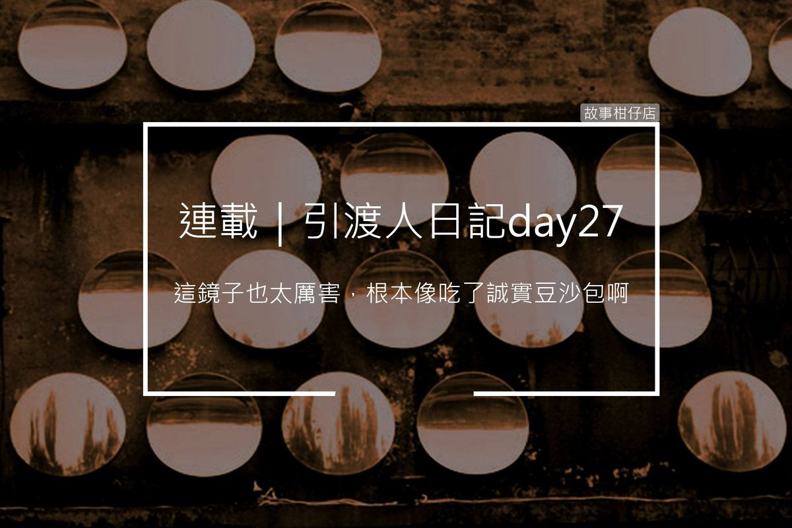

引渡人日記 day27：孽鏡台前無好人

我真搞不懂地府在想啥，有時候要做得又快又好，有時候又說慢慢來。像我上禮拜被叫去擦鬼門關，守關惡鬼一下子要我吃宵夜、一下子要我跑腿、一下子叫我休息，好好一個鬼門關，竟然擦了七天才擦完。
不過也是滿爽的啦！至少，比在白姐底下做事輕鬆多了，守關惡鬼還會分我菸抽抽。而且，這七天來看過形形色色的亡魂來過鬼門關，有的哀爸叫母說不想死、有的毫無反應，最稀奇的是，有人死了還很開心！
像前三天有個阿桑，歡天喜地一直跟我們道謝，不斷地說，等這天等好久啦，她終於可以跟老伴團圓啦。
雖然我是不確定，那個阿桑能不能真的見到老伴，但至少看到她歡歡喜喜，還是讓人心情很好。
我突然覺得，死，好像也不一定是壞事哪！
本來今天要吩咐去幫彼岸花澆水，突然來了個夜叉，急急忙忙對我說：「新來的，第一殿缺人，來幫忙！」
地府的人就是這麼霸道，我也只能趕緊丟下水桶，跟著夜叉小跑步過去。
上次來第一殿，是來跟秦廣王面試吧？真想不到，現在我已經成為地府的正式員工。
這次來，我才有心思好好看清楚。殿前一張桌子，桌旁有一面一人高的曲面大鏡子，上緣寫著「孽鏡台前無好人」。嘿，上次來還沒注意到有鏡子，看來我真的太緊張了。
「趕快過來！要升堂了！」一名小鬼把我拉進室內兩邊的布幔後，塞給我一個遙控，交代我怎麼用。
待橫眉豎目的秦廣王一坐好，我連忙按下「陰風」鍵，霎時間，滿殿陰風颯颯，好像還伴隨著鬼哭神嚎。
哭夭，原來我來面試那天覺得好冷，是因為有人在控制喔！
陸續有亡魂來到殿前報到，首先是個臉色蒼白的婦人，跪在地上不停發抖。
接過文判遞來的平板，秦廣王點點頭說：「一生查無罪孽，無須受罰，直接交付第十殿等候發落投胎！」
接下來的，是一個又高又帥的男子，秦廣王看看平板，皺起一對濃眉，毫不留情指派：「送交第二殿等候審判發落地獄！」
那男子大聲嚷嚷起來：「喂！為什麼前面歐巴桑直接等投胎，我卻要去地獄？我是好人耶！」
「好人是嗎？！」秦廣王鼻孔一哼，兩旁夜叉隨即將男子踹跪鏡子前，鏡子裡出現一幕幕男子生前所作所為：腳踏數條船、向女朋友要錢，不從便拳打腳踢、最後始亂終棄，那些被傷害過的女性，有的自殘，有的往後不再相信男人，孤苦一生。
幹，看得我拳頭都硬了！而且這鏡子也太厲害了，根本就等於吃了誠實豆沙包啊！厚，我一定要小心一點不要照到鏡子，免得什麼秘密都被知道。
秦廣王冷笑一聲：「此等渣男，竟敢在孽鏡台前稱好人？」
那男子臉色大變，整個人窩囊跪在地上不住磕頭，滿臉眼淚鼻涕：「我當時年紀輕不懂事，我發誓我真的有心悔改，拜託高抬貴手，別讓我到地獄受罰，下輩子我一定好好做人！」
靠！好痛！旁邊小鬼踩了我一腳，我才想起要切換「烈焰」鍵，一瞬間，原本冷風呼嘯的第一殿，突然熱得像是在蒸籠裡。地府機關真的有夠多，一下冷、一下熱，很容易感冒耶！
「下輩子？」秦廣王連看都不看他，大手一揮：「願你被業火焚燒之時，還能記得自己說過的話。送往第二殿！」